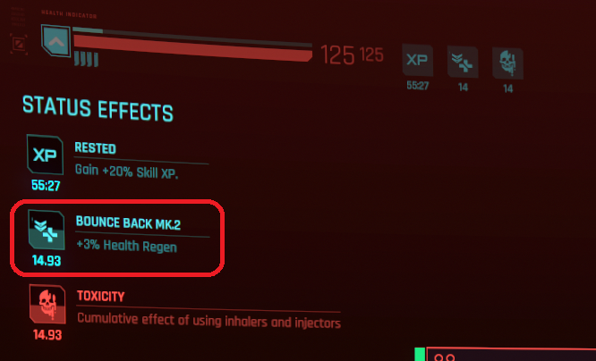

Mod mechanics
The following description details every feature of this mod, which will ruin any surprise intended to be discovered and enjoyed by the player.
This is only for people who can't stand playing a mod without knowing each of their internal gameplay mechanics. 🫣
You've been warned !
Please note the gameplay below might evolve over time, as more content get released.
Since it has to be manually maintained and it can happen that I forgot to do it (I'm a mere human after all choom's, not some methodic borg), please let me know in the Github issues if ever something is outdated.
Systems
This mod add the following gameplay systems to the game.
Addiction
The way addiction is being kept track of is the following:
- whenever V consumes an addictive consumables (see which ones below), his/her addiction to this specific consumable increases (you can think of it as a jauge).
- whenever V rests at home for long enough, gets refreshed, his/her addictions jauges decrease.
- mild drugs decreases twice as fast as they increase.
- hard drugs increases twice as fast as they decrease.
Addiction jauge has the following thresholds:
Clean(never consumed, or withdrawn from for long enough)Barely(consumed a couple of times)Mildly(consumed frequently, but not too much)Notably(consumed on a regular basis, or the substance is very addictive in itself)Severely(consumed for way too long)
V is considered seriously addict whenever (s)he reaches notable or severe thresholds.
Of course (s)he can perfectly withdraw from consuming the addictive substance and, if long enough, his/her threshold will decrease back.
Addictive consumables
The player will get hints from V whenever (s)he gets seriously addict:
- inhalers will make V cough, slightly after inhaling.
- injectors will make V feel pain, once their effect wears off.
- pills will have a specific effect on consumption, depending on their kind:
- anabolics (Stamina Booster, Carry Capacity Booster) will make V grunts.
- neuro transmitter (RAM Jolt) will make V experience migraine.
🆕 >= beta-0.13.0
These hints slightly increase foes' audio stim range while playing, making V more likely to be detected.
Families
Consumables are grouped by family, which gets their own gameplay mechanics.
Healers
- consumables: MaxDOC, BounceBack and Health Booster.
- healers are considered as mild drugs.
Whenever V becomes notably addict to any healer, the benefits of the consumables decrease. If (s)he is severely addict, the benefits gets even more lessened.
e.g. if MaxDOC usually instantly restores 40% health, whenever notably addict it will only restore 30%, or 20% if severely addict. For some healers, it also lasts shorter.
The status effects of these consumables will also have their UI in radial wheel updated accordingly, with their own custom icon.
🆕 >= beta-0.13.0
- V will start consuming healers faster when reaching severe addiction threshold.

Stimulants
- consumables: RAM Jolt, Stamina Booster and Carry Capacity Booster.
- stimulants are considered as mild drugs.
Whenever V becomes notably addict to a booster (each being treated separately) and (s)he hasn't consumed any for a certain duration, (s)he gets a debuff equals to what the consumable originally grants.
e.g. if RAM Jolt increases max RAM units by 2, whenever V is withdrawing (s)he is at 90% memory if notably addict, or 70% memory if severely addict until (s)he consumes some again.
Craving for a stimulant will also be shown in radial wheel with custom icon.
🆕 >= beta-0.13.0
- RAM Jolt can also cause Photosensitivity when severely withdrawn, which make impairing blinding effects (e.g. flash grenades) last longer.
Black Lace
Black Lace has always been an iconic drug in Cyberpunk lore, hence why it gets its own system.
Black Lace is considered as a hard drug.
Whenever V becomes notably or severely addict to Black Lace, and (s)he hasn't consumed any for a certain duration (s)he is susceptible to Fibromalgya, a custom status effect which decreases his/her REF
e.g. when experiencing Fibromalgya, V's REF decreases to 90% if notably addict or 70% if severely addict, until (s)he consumes some again.
When suffering from Fibromalgya, V will also express some pain.
Craving for Black Lace will also be shown in radial wheel with custom icon.
Alcohols
🆕 >= beta-0.13.0
Whenever V becomes notably or severely alcoholic (s)he can be subject to Jitters, greatly impairing his/her ability at aiming with ranged weapons.
This is not yet compatible with
Idle Anywhere, because there's currently no way to track when player chooses "Drink alcohol" interation.
Cigars and cigarettes
🆕 >= beta-0.13.0
Whenever V becomes notably or severely addict to tobacco (s)he can be subject:
- Short breath (notably addict): delays + reduces Stamina regeneration, and consumes Stamina while sprinting.
- Breathless (severely addict): delays + reduces Stamina regeneration, and consumes Stamina both while sprinting and dodging.
This is compatible with
Idle Anywhere.
🆕 >= beta-0.9.0
Additional mechanisms now exists to account for players using Wannabe Edgerunner mod together.
Insanity
Whenever addicted to Black Lace, V can suffer an additional Humanity penalty, called Insanity.
Penalty is calculated from max number of consecutive consumptions, along with addiction threshold.
Neuroblockers
Neuroblockers addiction works a little bit like Healers, except that it weakens their duration. In short: the more you're addicted to Neuroblockers, the shorter they last.
The status effects of these consumables will also have their UI in radial wheel updated accordingly, with their own custom icon.
Cyberware
Some cyberwares also have an impact on addiction in general.
Detoxifier
This item makes V's addictions decrease drastically more whenever getting a proper rest.
e.g. whenever equipped with Detoxifier and properly resting at house, V sees his/her addiction decrease twice as fast (cumulable with Metabolic Editor).
This benefit is kept hidden from the player to discover.
Metabolic Editor
This item makes V's addictions decrease drastically more whenever getting a proper rest.
e.g. whenever equipped with Metabolic Editor and properly resting at house, V sees his/her addiction decrease thrice as fast (cumulable with Detoxifier).
This benefit is kept hidden from the player to discover.
Biomonitor
This item will warn V whenever crossing a serious thresholds.
e.g. a little animation will play on-screen with the Biomonitor warning V about his/her current condition.
The UI is also dismissable, and automatically hides whenever interacting with another interaction UI in the game.


Voiced reactions
🆕 >= beta-0.8.0
Now V will sometimes have voiced reactions, for English language only (it will have no effect for people playing in another language yet).
Examples:
- whenever biomonitor boots many times.
- whenever biomonitor reports serious condition multiple times.
- whenever biomonitor is dismissed during combat.
Some of these voiced reactions are unique.